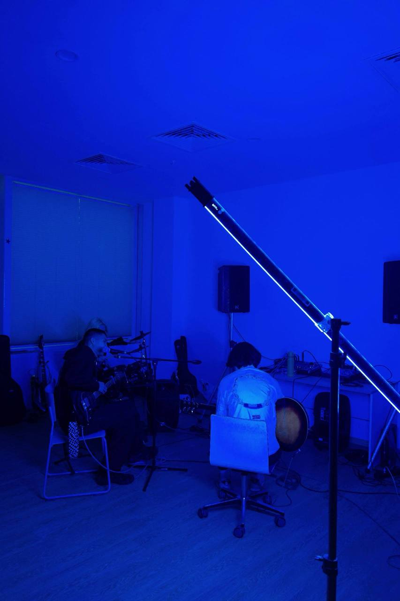
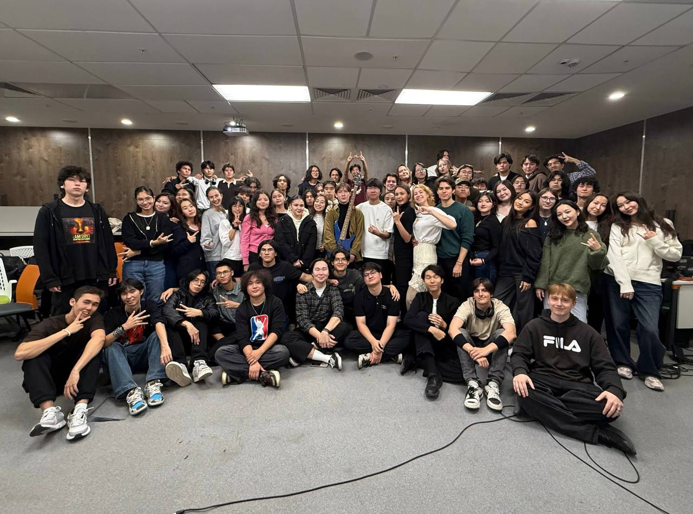

Our Community, History & Rehearsal Space

Founded in 2024 at AITU, our music club brings together student musicians, sound techs, and vocalists across all academic degrees. Our headquarters is located in Room C1.1.142, providing a specialized soundproof studio where student bands rehearse across multiple genres. The facility operates daily from 09:00 to 22:00. Because multiple ensembles share the rehearsal area, members book practice slots in advance via our dedicated automated system.Figure 1: Club officers and active band musicians gathered inside studio room C1.1.142.
The club accommodates a diverse sonic palette.
We feature instrumental tracks for
electric guitar, bass, drums, keyboards,
saxophone, and violin
,
alongside solo and backing vocalists.
Every rehearsal session adheres to the principle that
musical practice builds stage confidence:
Show must go on, no matter how tough the university
exam week gets.
Currently, general registration for new instrumentalists is
active for the autumn term.
